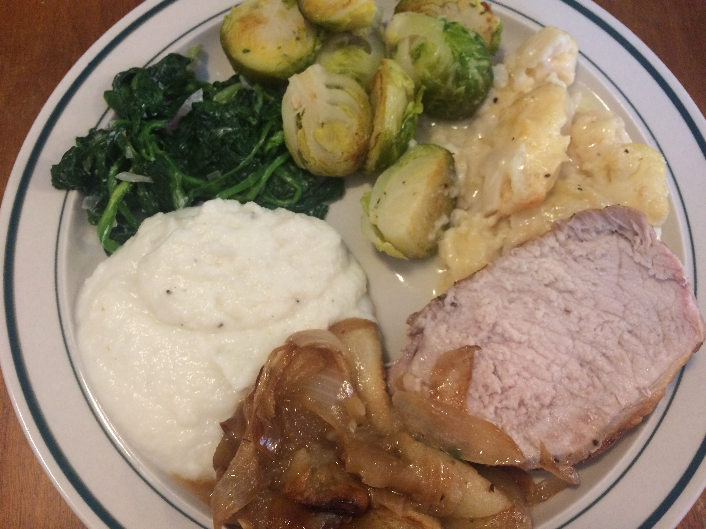

Pork Roast
2 lbs pork roast
2 cloves garlic, sliced
3 granny smith apples, cut into small slices
2 white onions, roughly sliced
1 small bunch thyme
2 tbsp sugar
Cauliflower Casserole
1 whole cauliflower
1 cup gruyere cheese
2 tbsp sour cream
1/2 cup heavy cream
Spinach
1 large bag spinach, washed and dried
2 shallots, chopped
2 tbsp sour cream
Brussel Sprouts
3/4 lb brussel sprouts
Turnip Puree
5 large turnips
Handful of fresh thyme
1 quart milk
1/4 cups heavy cream
2 tbsp. butter
3 cloves garlic
Serves Four Total Time: 100 minutes
Preheat oven to 350 degrees Fahrenheit. (
Place a large oven dish on the stove over low heat. Add a tbsp of butter, wait for it to start sizzling gently then add the sugar, apples and onions. Cook for about 6 minutes. Meanwhile dry the pork roast, season generously with salt and pepper, score the top and place the garlic slices into the scores. Then place the pork roast into the middle of the oven dish and spread the thyme around the roast.
Continue to cook for a few minutes, spooning some of the apple onion sauce over the meat and then place dish in the oven to bake for one hour, plus or minus depending on cut of the roast.
In large pot boil the cauliflower for about 5-10 minutes depending on how fresh it is, then dry it off, cut it into small florets and in a bowl mix it with the sour cream and heavy cream. Afterwards spread out mixture in small baking dish and add gruyere cheese on top. It takes about 15 minutes to bake so add it to oven when roast has baked for 45 minutes.
In a large saucepan add the turnips, thyme, milk and garlic, bring to a simmer and then cover partially for about 20 minutes.
Cut off ends of the brussel sprouts, and in another pot boil until you are able to cut through brussel sprout smoothly with a knife, about 12 minutes. Then cut them in half, season with salt and pepper and brown in a pan over low heat with 2 tbsp butter until they are browned. Be very careful, they burn easily.
Finally in a last pot, add a tbsp of butter, the shallots, and the spinach and cover over low heat, stirring occasionally. Once the spinach has reduced considerably in size, add in the sour cream and stir for about 2 more minutes.
Add the ingredients of turnip pan to blender along with the butter, 1 tsp salt and pepper. Blend briefly and then slowly add in heavy cream until puree is desired density.
Slice thick slices of the pork roast and serve warm alongside all the side dishes.
